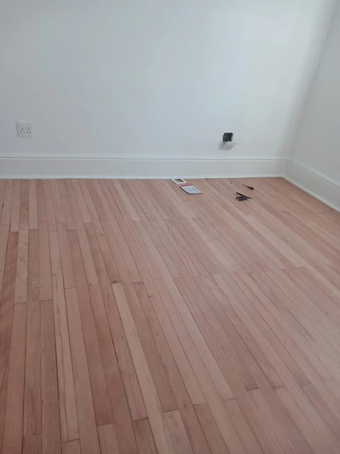
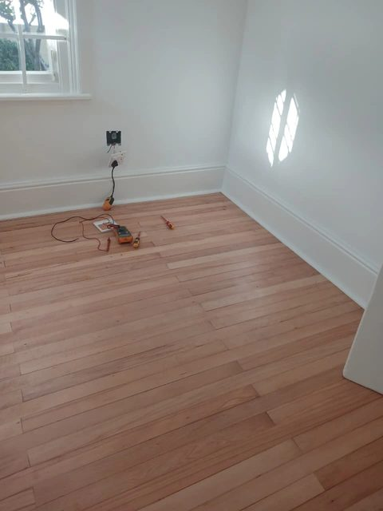
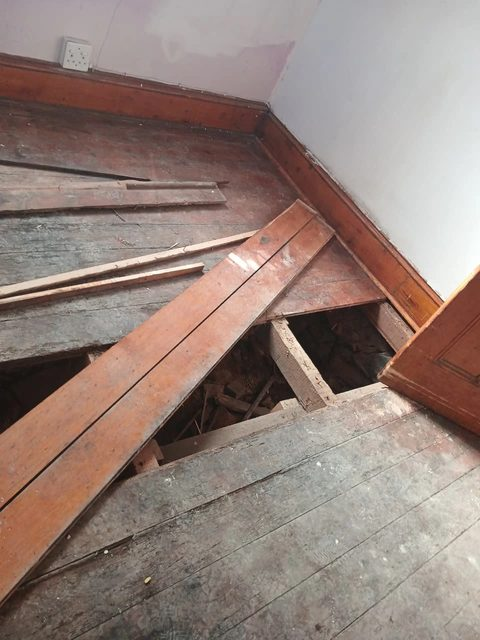
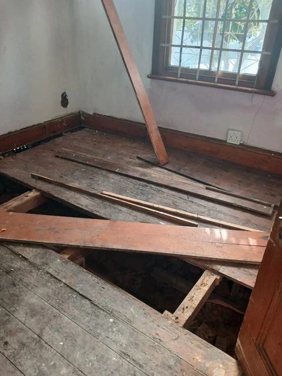
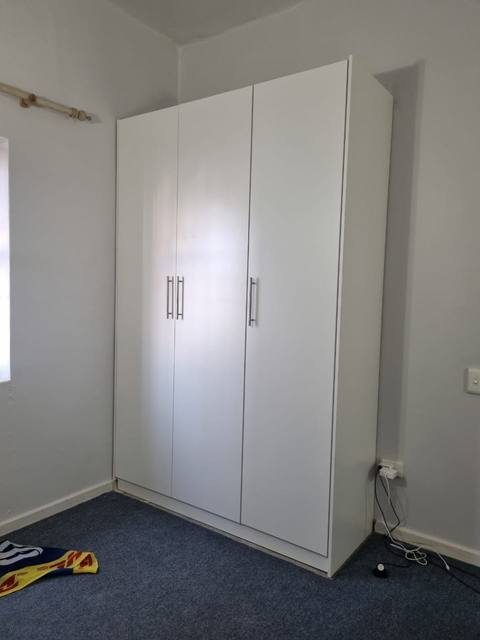
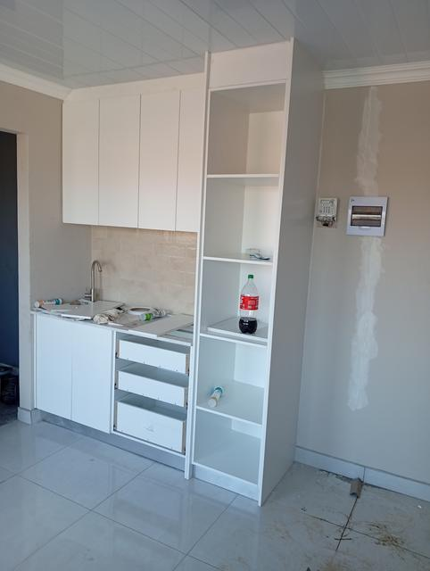

Renovation & woodworks in Mowbray
Mowbray has a mix of older cottages, semi-detached houses and apartment blocks close to UCT, with lots of student accommodation and first homes. We're often asked for replacing old timber floors, compact kitchens and kitchenettes, built-in wardrobes and study units, and refits between tenants.
Our work in Mowbray
Mowbray first, then more of our work.






Working in Mowbray
Mowbray grew up around the old Main Road and the railway station, so many homes are older cottages and semis with suspended timber floors on joists. After decades of wear and damp, those boards and the timber below them can rot, which is the job our Mowbray photos show: rotten old boards lifted, then a new timber floor laid with fresh skirting. Being close to UCT, Mowbray also has many flats and student houses, where compact kitchens, study units and tough wardrobes are the usual requests.
Kitchens · Built-in cupboards · Doors & garage doors · Furniture · Decks · Renovations →
Questions from Mowbray
Can you fit out student rooms in Mowbray?
Yes. Built-in desks, shelving and wardrobes for student rooms are a common job for us, built strong enough for years of use.
How do you know if a timber floor needs replacing?
Soft or bouncy boards, gaps and a musty smell are warning signs. We lift a few boards, check the joists and subfloor, and tell you honestly whether a repair or a new floor makes more sense.
Can you replace a floor without redoing the whole room?
Yes. We can replace one room at a time, and fit new skirting so the finish looks complete.